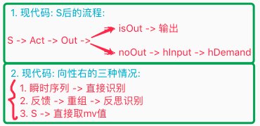
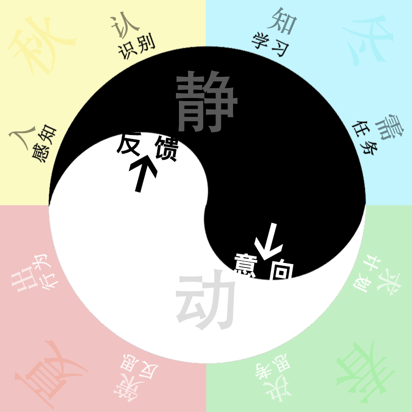
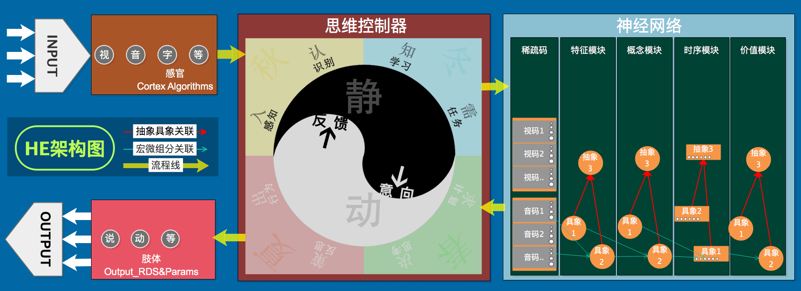

AI系列之《2022.07-08：S 反思评价与思维框架 v4》

来源：HELIX_THEORY/手稿/assets/641_S价值pk拦截分析图.png

来源：HELIX_THEORY/手稿/assets/645_思维框架图v4.png

来源：HELIX_THEORY/手稿/assets/647_HE架构图V3.png
来源：Note27.md
7 到 8 月围绕 S 候选集再抽象、快慢思考性能优化、TCSolution 价值 PK、向性、S 反思评价和思维框架图 v4 展开。
前一阶段已经能产生和排序方案，这一阶段则继续追问：方案为什么会卡顿？为什么价值 PK 不稳定？为什么同一个动作在不同方向上意义不同？“向性”由此成为解决 S 评分 PK 的关键切口，它让行为不再只是离散动作，而带有相对目标与趋势。
思维框架图 v4 是一次架构性回望：把识别、反思、候选、评价、执行之间的关系重新画清楚。它像一个阶段性地图，帮助后续任务失效机制、多层抽象和 Canset 再类比继续向前。